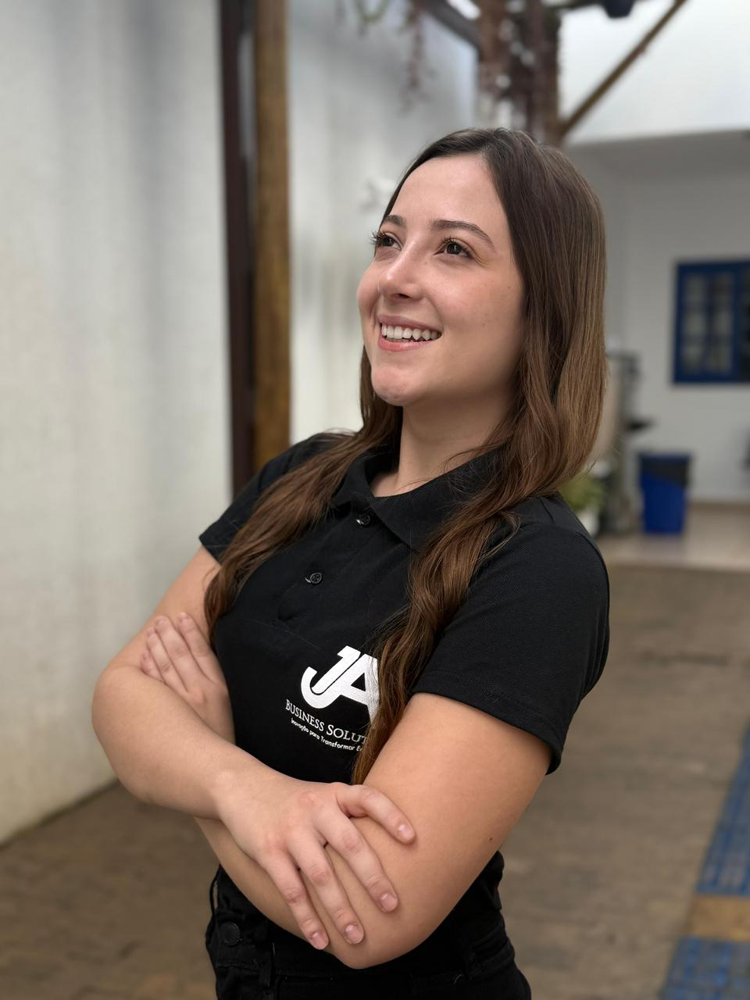
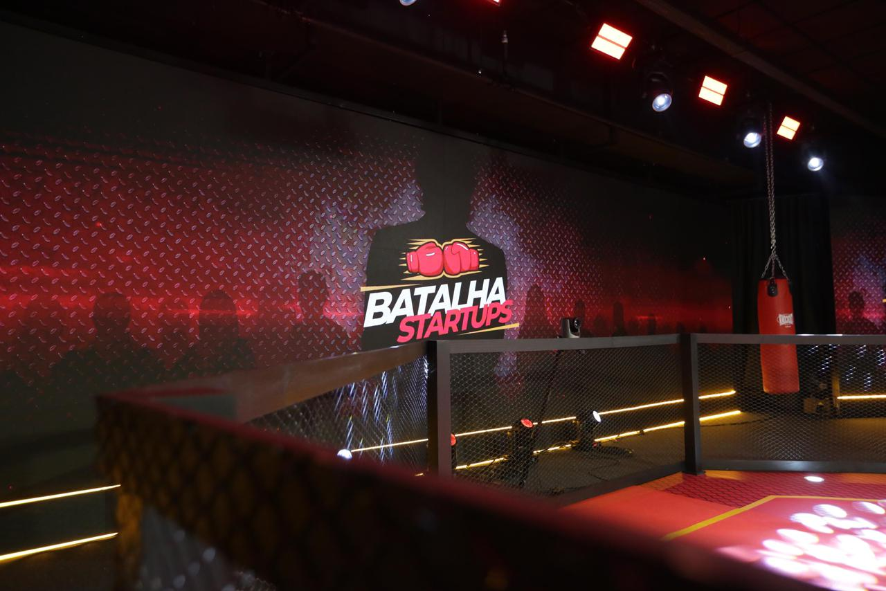
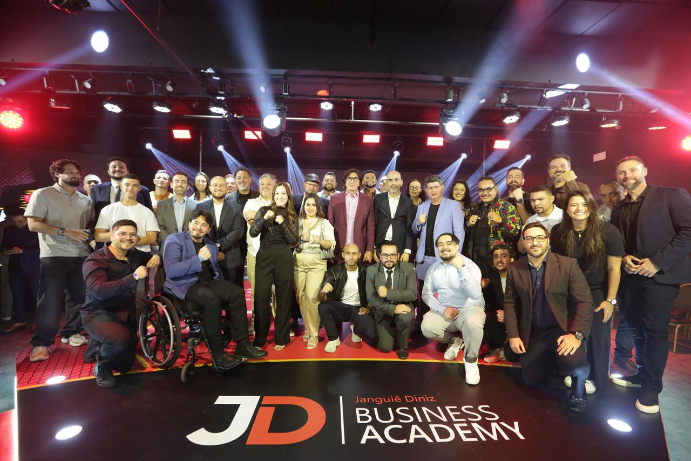
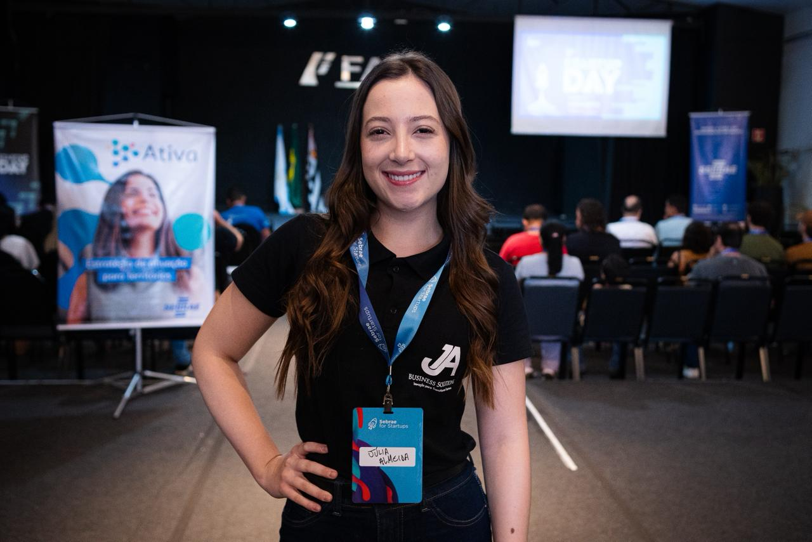

Quem entende de terra, entende de software.
Não terceirizamos a compreensão do problema. Cada tela do app parte de uma pergunta que só se aprende pisando no talhão: o que o produtor precisa decidir agora?
O manifesto por trás da plataforma
A JA Business Agro Solutions não começou numa sala de reuniões. Começou no chão de uma fazenda em Itapeva, com uma estudante de Agronomia que via o potencial da região e a falta de ferramentas para transformar esse potencial em produtividade real.

A fundadora
Júlia Almeida cursa o 4º ano de Agronomia na FAIT, Faculdade de Ciências Sociais e Agrárias de Itapeva. Há quatro anos à frente da JA Business Agro Solutions, ela vem construindo um aplicativo de gestão agrícola pensado para levar soluções tecnológicas reais ao agronegócio.
Não foi um plano de negócios feito de fora para dentro. Foi observação de campo, feita por quem estuda e vive a rotina da produção rural.
A ideia nasceu do grande potencial agrícola da região de Itapeva e da falta de ferramentas capazes de contribuir para a eficiência, a organização e o aumento da produtividade no campo.

Vitrine nacional
Júlia foi selecionada para o programa e mostrou que os jovens empreendedores de Itapeva e do sudoeste paulista sabem transformar conhecimento em tecnologia para o agronegócio.
Do campo aos palcos


E isso é só o começo da safra.
Ler o manifesto ↓No que a gente acredita
Não terceirizamos a compreensão do problema. Cada tela do app parte de uma pergunta que só se aprende pisando no talhão: o que o produtor precisa decidir agora?
Tecnologia de ponta não serve pra nada se for complicada demais pra usar às 5h da manhã, no meio da lavoura, com uma mão no celular e outra no trator.
Itapeva e o sudoeste paulista não são só onde a matéria-prima nasce. São onde a próxima geração de ferramentas para o agronegócio está sendo escrita.
A história é a raiz
Satélite, financeiro rural, Dalva IA e estoque. Tudo num só app, pensado para funcionar até sem sinal no meio do talhão.
Índice de vigor calculado a cada passagem do Sentinel-2. O estresse aparece antes do olho humano ver.
Custos, receitas e margem por hectare. Relatório pronto pro contador.
Aponta a câmera, dá baixa no defensivo. Funciona offline.
Registra do trator, sincroniza quando o sinal volta.
Tudo no Plano Pro Agro por R$ 289,90/mês. Crie sua conta em um minuto, de graça.